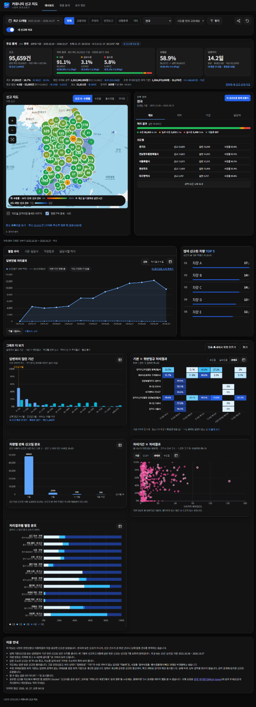
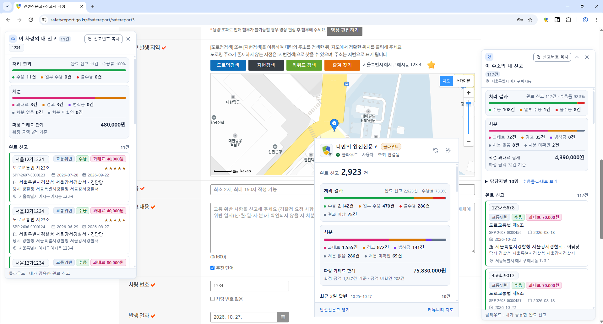

앱 로컬 저장
신고 목록과 상세정보를 SQLite에 저장합니다. 검색·지도·통계가 같은 로컬 자료를 사용하며 백업·복원을 지원합니다.
MOBILE · WEB · EXTENSION
신고 내역을 앱에 저장해 검색하고 처리 결과를 확인합니다.
공유한 자료는 커뮤니티 지도와 크롬 확장에서 조회합니다.


앱 이미지는 기존 공개 README 화면으로 현재 버전과 일부 차이가 있습니다. 현행 앱 화면과 연결 시연은 추후 추가합니다.
신고 수집 · 로컬 저장 · 검색 · 지도·통계
지역·기간·기관별 집계
지도·표·차트로 비교
안전신문고 웹 화면에서
본인의 완료 신고 조회
행정안전부 공식 서비스가 아닌 개인 개발 프로젝트입니다. 커뮤니티 기능은 로그인과 데이터 공유 동의를 사용합니다.
| 구성 | 언어 | 프레임워크·라이브러리 | 역할 |
|---|---|---|---|
| Android 앱 | Dart · Kotlin | Flutter | 신고 수집, 검색·통계·지도, 알림 |
| 공유 자료 처리 | Python | psycopg | 원문 파싱, 작업 큐, 재시도 |
| 인증·공유 API | TypeScript | — | 계정·기기 확인, 공유 동의·철회 |
| 커뮤니티 지도 | TypeScript | React · ECharts | 지도 집계, 필터, 표·차트 |
| Chrome 확장 | JavaScript | — | 기존 웹사이트에 조회 패널 추가 |
기존 PC 수집 도구의 기능을 모바일로 옮겼습니다. 앱에서 수집·저장·조회를 처리하고 기존 사용자 데이터를 가져오는 절차를 만들었습니다.
사용자 요청에 따라 신고 정렬, 동기화 상태 표시, 화면 갱신과 주소 조회 패널 유지 동작을 수정했습니다.